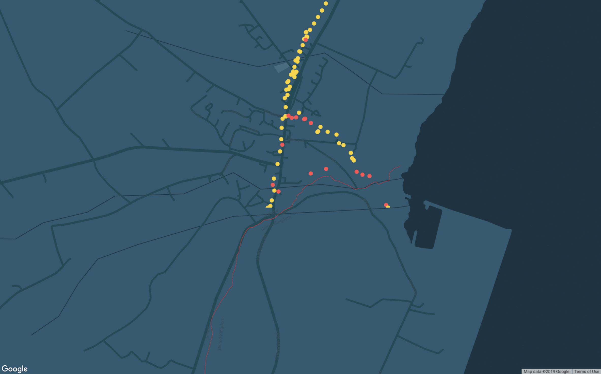

surveying cell towers along the border
This proposal was largely speculative because of an incredible lack of public data available in the domain of telecommunications in Ireland. As such, it should not be interpreted as a rigorous technical analysis of the telecommunications landscape, but instead, a design provocation and proposal considering human factors in a pervasive industry that often overlooks them.
The presence of telecommunications infrastructure is exceptionally evident in Ireland. Most of the development in regions I have walked through, like Muff and Culmore, remains low to the ground with sprawling family-owned plots for cattle, sheep, and farming. But imposed on this abundantly green landscape is another layer of infrastructure, immensely overpowering and unnatural: cell towers, wind farms and cable lines. It’s easy to edit these elements out of our attention, but during my quiet walks along the border, I challenged myself to notice this infrastructure and understand how it was deployed.
Cell towers are neutral in some ways. The infrastructure’s form is homogeneous, and lacks a visible association to any country or jurisdiction. The same structures often exist across the world and are immediately recognizable to everyone. The air, the solvent for information in this landscape, is an invisible medium. Though the air might carry frequencies communicating ideas that are strongly tethered to ideas or feelings tied to personhood, nationhood and identity, we pass through it effortlessly, blissfully unaware.
But buried under this neutral infrastructure is a thicket of policies and technical requirements, that explicitly assign these towers to countries, companies and regulators. As I surveyed the border region for data, I collected the MCCs and MNCS (among other information) about cell towers that my phone established connections to. MCCs are Mobile Country Codes, which, when combined with Mobile Network Codes (MNCs) can unique describe the network and country a subscriber is connected to. Each tower is associated with a network and a country, but from my data, it is evident that many cell towers from NI offer the best connectivity to subscribers who are technically in Ireland.

An example of where different MCCs are along the border. The orange represents NI infrastructure which has generated a mismatched service area of Irish subscribers who have better connectivity with NI’s towers instead of Irelands’. This map was generated from my own survey data as I walked along the border.
The politics of air in border zones is mediated by a number of factors. Cell towers generate signals by sending signals along a range of frequencies that they are allocated. For lower bands of spectrum, waves travel slowly and usually are more robust, so they can travel a farther distance. These are called “beachfront” spectrum, and can survive better than other frequency ranges despite rain or other obstacles. High frequency bands, for example, the ones that WiFi travels over, are much weaker but faster. Because they are faster, than can communicate more data (the faster frequency means you can pack more data along it quickly), but these high frequencies are less robust and degrade quickly. Because of this, WiFi can only operate in small geographic envelopes while radio signals along lower frequencies travel broader distances (and why AM covers more distance than FM).
The way these spectrum frequencies are allocated in the region is primarily through auctions. Though Ofcom (UK) and the Commission for Communications Regulation of Ireland have some public documents about their assignment of frequencies, this is largely undocumented online and inaccessible to the general public. From what limited information is available, bands are separated into these categories of frequencies:
9 kHz to 27 500 kHz
27.5 MHz to 10 000 MHz
10 GHz to 1000 GHz
These frequencies can now be mapped to distances. Air contains humidity and other obstructions, which usually interrupt signals and cause them to attenuate.
My proposal is to create a new regulation that designates new requirements for networks with infrastructure along the border region. This kind of regulation addresses several different uses of signal – from radio, to cell phones to IoT devices and WiFi (and a 5g future), which all may require their own unique attention. For high frequency service operators offering things like millimeter wave cells, IoT and 5g, the penumbra of service is restricted to a smaller geographic region. These services naturally must densify to provide coverage to any region, and these will offer limited overlap along the border because they naturally need to proliferate to work. Because of this, these companies require incentives to actually expand their coverage to the border area and must negotiate an incentive offering that needs buy-in from both NI and Ireland.
Low frequency cells cover broader geographic envelopes, and are less densely deployed. This reduction in density means that cells along one side of the border are often closer to subscribers on the other side than cells that are registered in their own country. With the border region demonstrating a strong cohort of people whose lives ebb and flow across the border, this distinction is a nuisance. Connecting across the border is a fact of life, and offering support and connectivity is exceptionally important, given the prevalence of isolation and loneliness among farmers and the high cost of connection that already plagues the area (the reason why our host, Jackie, does not have internet at home). Cell towers in this envelope should operate under stricter requirements to extend their services to people in the border zone, and infrastructure should operate across MCCs, regardless of whether a company is registered in Ireland or NI. Currently this cross-pollination of service is in place, but is threatened to impose exceptionally high prices on residents if a hard-Brexit threatens the current EU “Roam like at home” policy.
Finally, radio and television cover an entirely different magnitude of scale. Current NI requires that its telecommunications services and radio include channels with Ulster-Scotts, and national Irish news. Requirements like this must be preserved, even in the event of a hard Brexit. Radio bleeds across borders, and remains a strong form of communication that communities often rely on. When obituaries play on the radio daily and become a ritual, we must not only consider where infrastructure is physically deployed, but the personal effects and reach of the information conveyed upon it.

An example of how infrastructure in different zones might apply to different levels of scrutiny along a policy like this. In this case, these are all cell towers, but if we considered other infrastructure for radio and 5g, the zones defined will carry different ranges.